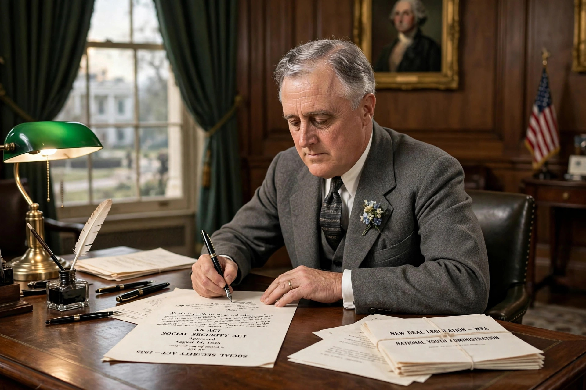

The National Labor Relations Act of 1935, also known as the Wagner Act, is a foundational statute of United States labour law that guarantees the right of private-sector employees to organise into trade unions, engage in collective bargaining, and take collective action such as strikes. It also created the National Labor Relations Board (NLRB).

Section 7 protects employees' rights to self-organisation and to bargain collectively through representatives of their own choosing. Section 8 defines unfair labour practices by employers, including interfering with union organising, discriminating against union members, and refusing to bargain. The Act excludes agricultural and domestic workers, independent contractors, supervisors and public-sector employees.
Named for Senator Robert F. Wagner of New York, the Act was part of Franklin D. Roosevelt's New Deal and passed after the Supreme Court struck down earlier industrial-recovery legislation. Its constitutionality was upheld in NLRB v. Jones & Laughlin Steel Corp. (1937). Union membership grew rapidly thereafter.
The Taft–Hartley Act of 1947 amended the Act, adding union unfair labour practices, restricting secondary boycotts and allowing states to pass right-to-work laws. The Landrum–Griffin Act of 1959 added further union regulations.